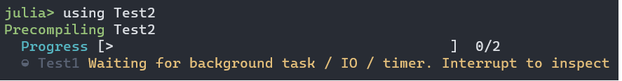

Fixing precompilation hangs due to open tasks or IO
Julia 1.10以降では、次のメッセージが表示されることがあります。

このメッセージは繰り返し表示される場合があります。自然に解消する兆候もなく表示され続ける場合は、修正が必要な「プリコンパイルのハング」が発生している可能性があります。一時的なものであっても、この警告でユーザーを煩わせないように解決しておくとよいでしょう。このページでは、このような問題を調査し、修正する手順を説明します。
メッセージの案内に従ってCtrl-Cを押すと、次のように表示されることがあります。
^C Interrupted: Exiting precompilation...
1 dependency had warnings during precompilation:
┌ Test1 [ac89d554-e2ba-40bc-bc5c-de68b658c982]
│ [pid 2745] Waiting for background task / IO / timer to finish:
│ Handle type uv_handle_t->data
│ timer 0x55580decd1e0->0x7f94c3a4c340このメッセージから、重要な情報が2つ得られます。
- ハングは、
Test2（using Test2で読み込もうとしたパッケージ）の依存先であるTest1のプリコンパイル中に発生しています。 Test1のプリコンパイル中に、JuliaはTimerオブジェクトを作成しました（Timerに詳しくない場合は、?Timerを実行してください）。そのオブジェクトはまだ開いたままで、閉じられるまでプロセスはハングした状態になります。
この情報を手がかりにtimer = Timer(args...)がどのように作成されているか特定できたなら、有効な解決策の1つは、モジュールの最後のendの前に処理を追加することです。timerがいずれ自然に終了するならwait(timer)を、強制的に閉じる必要があるならclose(timer)を追加します。
ただし、それほど単純ではない場合もあります。通常は、まずハングの原因がTest1内のコードなのか、それともTest1の依存先のいずれかなのかを特定するのが最善です。
- 方法1：
Pkg.add("Aqua")を実行し、Aqua.test_persistent_tasksを使用します。これにより、問題の原因となっているパッケージを特定できるはずです。その後、belowの手順に従ってください。必要に応じて、PkgIdをBase.PkgId(UUID("..."), "Test1")として作成できます。ここで、...には、Test1/Project.toml内のuuidエントリの値を使います。 - 方法2：ハングの原因を手動で調査します。
手動で調査するには、次の手順を実行します。
Pkg.develop("Test1")Test1内でincludeによって読み込まれているコード、または定義されているコードをすべてコメントアウトします。ただし、using/import文は除きます。using Test2をもう一度試します（using Test1でもハングするなら、そちらを試してもかまいません）。
ここで、結果は次のどちらかに分かれます。
- ハングが続く場合、due to one of your dependenciesと判断できます。
- ハングが解消した場合、due to something in your codeと判断できます。
Diagnosing and fixing hangs due to a package dependency
二分探索で問題のある依存先を特定します。まず依存先の半分をコメントアウトし、どちらの半分に原因があるか絞り込めたら、その半分をさらに半分コメントアウトする、という手順を繰り返します。（プロジェクトから削除する必要はありません。using/import文をコメントアウトするだけです。）
疑わしいパッケージを特定したら（ここではThePackageYouThinkIsCausingTheProblemと呼びます）、まずそのパッケージのプリコンパイルを試してください。そのプリコンパイルもハングする場合は、引き続き依存関係をさかのぼって原因を追跡します。
ただし、多くの場合、ThePackageYouThinkIsCausingTheProblemのプリコンパイルは問題なく完了するでしょう。この場合、原因は関数ThePackageYouThinkIsCausingTheProblem.__init__にあると考えられます。この関数はThePackageYouThinkIsCausingTheProblem自体のプリコンパイル中には実行されませんが、ThePackageYouThinkIsCausingTheProblemを読み込むパッケージのプリコンパイル中には実行されます。この仮説を検証するために、次のような最小動作例（MWE）を用意します。
(@v1.10) pkg> generate MWE
Generating project MWE:
MWE\Project.toml
MWE\src\MWE.jlここで、MWE.jlのソースコードを次のようにします。
module MWE
using ThePackageYouThinkIsCausingTheProblem
endまた、MWEの依存先にThePackageYouThinkIsCausingTheProblemを追加しておきます。
このMWEでハングが再現すれば、原因を特定できたことになります。ThePackageYouThinkIsCausingTheProblem.__init__がTimerオブジェクトを作成しているはずです。そのタイマーオブジェクトに安全にcloseを適用できるなら、それがよい選択肢です。そうでなければ、最も一般的な解決策は、どのパッケージであってもプリコンパイル中にはタイマーを作成しないようにすることです。次のコードを
ccall(:jl_generating_output, Cint, ()) == 1 && return nothingThePackageYouThinkIsCausingTheProblem.__init__の最初の行に追加すると、パッケージのプリコンパイルを目的とするJuliaプロセスでは、初期化処理を一切行わなくなります。
Fixing package code to avoid hangs
パッケージ内で原因を示唆する単語（この場合は「Timer」など）を検索し、問題がどこで発生しているか特定できるか確認してください。なお、次のようなメソッドの定義自体に問題があるわけではありません。
maketimer() = Timer(timer -> println("hi"), 0; interval=1)これが問題を引き起こすのは、モジュールの定義中にmaketimerが呼び出される場合だけです。たとえば、次のようなトップレベルの文から呼び出されている可能性があります。
const GLOBAL_TIMER = maketimer()あるいは、precompile workload内で呼び出されている可能性もあります。
原因となる行の特定が難しい場合は、二分探索を検討してください。パッケージ内のコードを部分的にコメントアウトし（またはincludeの行をコメントアウトしてファイル全体を除外し）、問題の範囲を絞り込んでいきます。